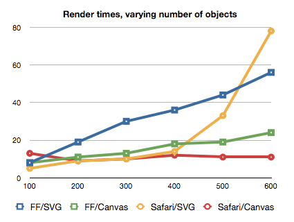
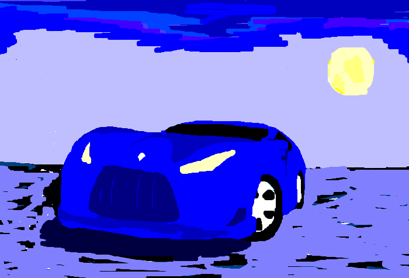
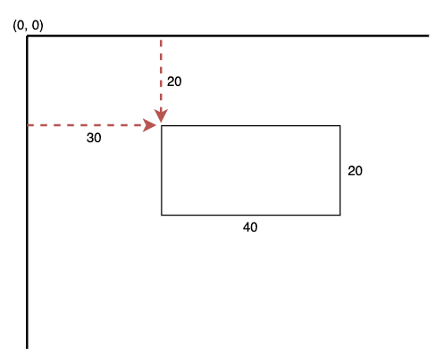

canvas
Games
Charts
Images
Effects

It's all
canvas
What is canvas?
The HTML canvas element is used to draw graphics, on the fly, via JavaScript. The canvas element is only a container for graphics.
History
The canvas element was first introduced in 2004 by Apple in the WebKit movement for Mac OS X with its use in Dashboard and Safari applications. The missing canvas issue in IE was fixed by Google, which issued a compensation for an extension written in JavaScript called ExplorerCanvas.
How to use canvas?
Add to HTML
Find element in JS
Add a style attribute
By default, the canvas element has no border and no content.
And ... it's all
You can make masterpieces! :)
simple shapes
Canvas Coordinates
Draw a Line
Draw a Circle
Draw a green rectangle
Drawing Text on the Canvas
To draw text on a canvas, the most important property and methods are:
- font - defines the font properties for the text
- fillText(text,x,y) - draws "filled" text on the canvas
- strokeText(text,x,y) - draws text on the canvas (no fill)
Drawing images

Transformations
- scale()
- rotate()
- translate()
- transform()
- setTransform()
Drawing paths
To make shapes using paths, we take some extra steps:
- First, you create the path.
- Then you use drawing commands to draw into the path.
- Once the path has been created, you can stroke or fill the path to render it.
Animations
- setInterval()
- setTimeout()
- requestAnimationFrame(callback)

Via js canvas supports mouse events and keyboard events.
- canvas.addEventListener("mousedown",doMouseDown,false);
- canvas.addEventListener('mousemove', doMouseMove,false);
- canvas.addEventListener('mouseup',doMouseUp, false);
- window.addEventListener('keydown', doKeyDown,true);
- canvas.addEventListener('keydown', doKeyDown,true);
- and ets...
Summary
HTML-5 canvas provides an easy and powerful option to draw graphics using JavaScript. It can be used to draw graphs, make photo compositions, or do simple (and not so simple) animations.